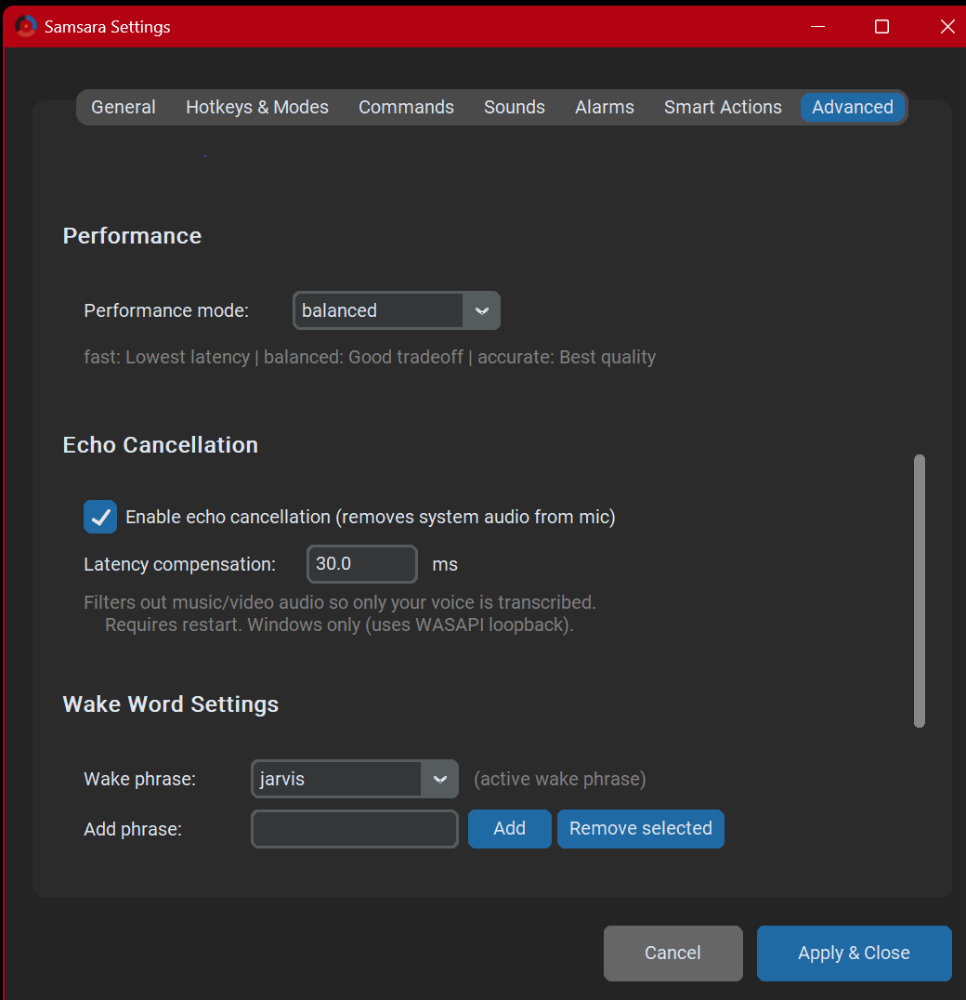

Samsara is a local-first voice assistant for Windows. Its persistent HANDS FREE lane lets natural dictation and exact voice commands coexist: talk across pauses, navigate without changing modes, and say "end" when a thought is ready to paste. Core dictation, commands, and wake-word processing run on your machine; optional network features are disclosed and configurable. Built first for one developer's chronic pain. Free and fully unlocked for anyone who needs it.
I'm Morne, and my hands fucking hurt.
I've had Hypermobile Spectrum Disorder for a decade. Using a mouse and keyboard hurts — all the time. I tried paid apps, but they were fragmented, expensive, and didn't fit. So I built Samsara.
Samsara didn't free me from pain. But it freed me from a lot of it.
I went from using a computer two or three times a day, 15 to 25 minutes at a stretch, to having multi-hour writing and development sessions. Of the moments I now stop, only about a third are because of my fingers. The rest are energy, focus, or just life.
I still can't play video games the way I used to ten years ago. But I can play them sometimes, which I'm overjoyed about — because that's up from never.
That's freedom.
— Morne
Ordinary speech becomes buffered dictation; exact commands such as "scroll down", "show numbers", or "switch window" execute immediately without leaving HANDS FREE. Say "end" by itself to paste the complete thought and continue in the same session. Hold-to-dictate and wake-word commands remain available too.
Every change to Samsara should reduce a step, or steps, somewhere in the use of your machine. Reduce friction. Reduce cognitive load. Reduce the cost of interacting with a computer.
Traditional software assumes interaction is cheap. For people with chronic pain, ADHD, limited energy, or anything else that makes computing exhausting, it isn't. Samsara is built around that assumption being false.
Living with ADHD, "work smart, not hard" stopped being a productivity slogan and became survival logic. I was already working hard just existing in a room.
No marketing trick replaces engineering. Here's what's actually under it.
Audio captured through WASAPI, transcribed by faster-whisper running on your GPU (CUDA optional, CPU fine). Core dictation, commands, and wake-word processing are designed to run locally. Optional features can make network requests when deliberately enabled, and speech-recognition models require an initial download.
Live partial transcriptions update every second in a floating overlay. The final paste uses a Ctrl+Z undo-cycle to swap drafts cleanly — the result of three rounds of multi-model code review.
Direct ctypes calls into IAudioEndpointVolume for volume control (because pycaw proved unreliable). TCP M-code protocol for FlashForge printers. JSON-RPC for Hyperion LED strips. AHK for Electron apps that ignore Win32.
Drop a Python file in plugins/commands/, decorate with @command, you have a voice command. Ships with a plugin architecture covering smart home, music, printers, macros, audio switching, screen recording, GIF search, scroll, text marker, volume/mute, Stremio, health tracking, reminders, alarms, Ava (local LLM voice assistant), and more.
High-frequency commands like "open Chrome", "lights red", or "pause print" stay instant and predictable. No AI in the loop, no cloud latency, no chance of being misunderstood. Open-ended requests can optionally route to AI systems you configure yourself — local LLMs, your own API keys, whatever you trust. You decide where the boundary lives.

For the technically curious. You don't need to know any of this to use Samsara.
A real session, real desk, no edits beyond trim. Wake word, lights, apps, dictation, a sketch on the side.
Originally posted to Instagram. Sound on recommended.
v0.22.0, just shipped: HANDS FREE is now one persistent command-and-dictation lane. Natural pauses no longer paste fragments or force a mode change; "end" commits the whole thought while the session stays active. Exact commands and macros remain available between thoughts.
Also in v0.22: DOM-aware Show Numbers for Chromium with Windows UI Automation fallback, high-DPI and multi-monitor fixes, voice-managed vocabulary, safer reminder toasts, configuration backup and restore, OpenRouter for cloud Ava, better microphone calibration, and strict local-only Task Lists.
Next: Stabilize v0.22 with real users, then build the ambient Ava workflow: ask what agents are doing, triage incoming information, and hand work between tools without looking away or moving your hands.
Every roadmap item is filtered through the same question: does this reduce a step somewhere?
Windows only for now. Beta testers welcome — bug reports are the only currency this project accepts.
No in-app purchases. No subscriptions. No usage limits. Download anonymously, dictate a 300-page novel, have Jarvis read it back the next day, repeat as often as you like. There's no fee, no quota, and no point where you start owing money.
No account required. No email, no name, no telemetry. Core dictation, commands, and wake-word processing are designed to run locally. Samsara does not send core dictation to a service operated by its developer. If you enable an optional cloud AI feature yourself, that traffic goes to the provider you configured.
Licensed under AGPL-3.0 — open source today, not on a future date. The full source is already public, so if I disappear, get sick, or stop maintaining Samsara, anyone can pick it up and continue. You can't be stranded with software that died with its developer.
Core dictation, wake-word processing, commands, history, and Task Lists stay local. Initial speech-model downloads, Edge TTS, optional cloud Ava, Smart Corrections' optional cloud fallback, user-configured webhooks, and ordinary web-opening commands can use the network. Do not use a network-backed feature for sensitive content unless you trust its provider.
Everything above — voice control, the full command system, full dictation, the entire demo — is free forever, no strings. Optional cloud AI routing is free too if you bring your own API key. There will never be a feature locked behind payment.
No installer — just extract and run. The standard download is the verified CPU build. The separate CUDA runtime pack is optional; no NVIDIA GPU is required.
Extract the archive and run Samsara.exe. The setup wizard walks through microphone selection and basic controls. Hold the configured dictation key for immediate speech-to-text, or enable HANDS FREE and say "end" by itself when a complete thought is ready to paste. Wake words are optional. The documentation covers CUDA setup and the browser extension used by DOM-aware Show Numbers.
Licensed under AGPL-3.0 — free and open source, including for commercial use.
Reasonably well. The wake-word matcher tolerates a wide range. Quiet voices work better with a close-positioned mic — headset, lavalier, or a USB mic within arm's reach.
Whisper handles most English accents better than older speech engines. If a specific word is consistently misheard, Samsara has a custom dictionary you can add to.
Yes. Wake-word activation means you don't need to reach for a hotkey. A wireless headset or close-positioned mic helps.
Not intentionally. Samsara doesn't manipulate focus or interfere with screen reader output, but specific edge cases haven't been tested yet. If something breaks, please report it.
No. The standard v0.22 download is the verified CPU build. A compatible NVIDIA GPU can accelerate transcription with the separate, optional CUDA runtime pack; installation requires the complete pack and a restart.
The source is already public under AGPL-3.0 — a fully open-source license today, not a future conversion. Anyone can fork it and continue. You won't be stranded.
Samsara is early-stage. Things will break. Telling me when they do is the most useful thing you can do for this project.
Samsara is free and stays free. If it saves your hands and you want to send a coffee, I won't say no — but please don't feel you have to.